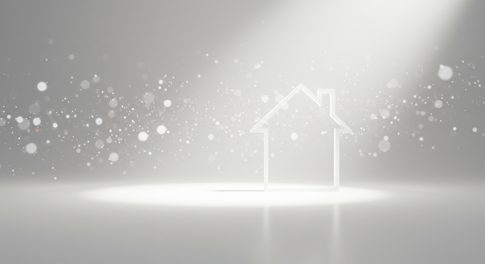
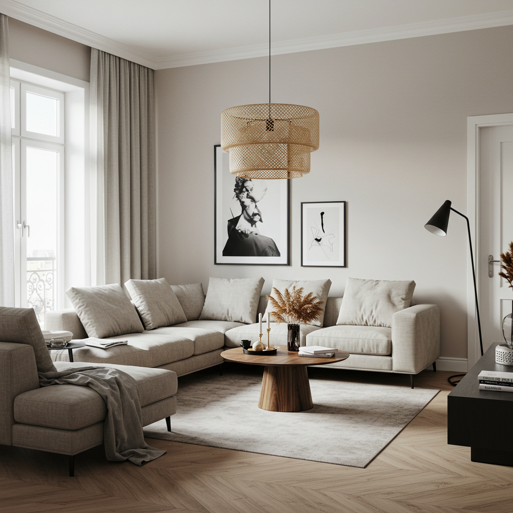
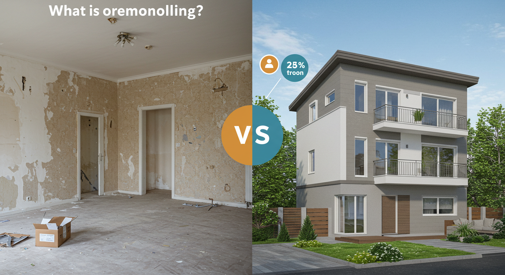
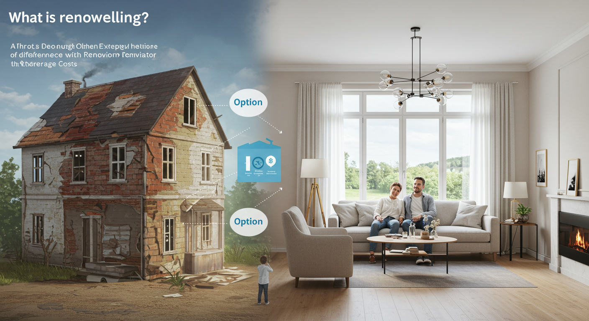
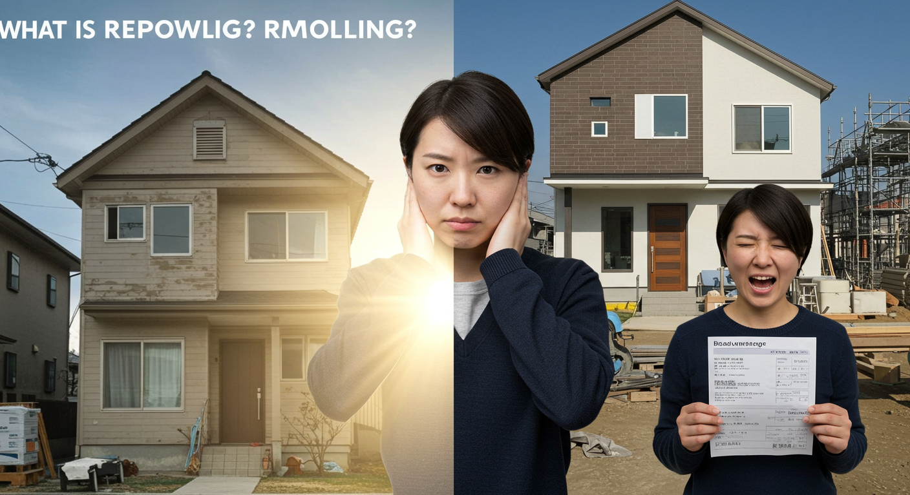
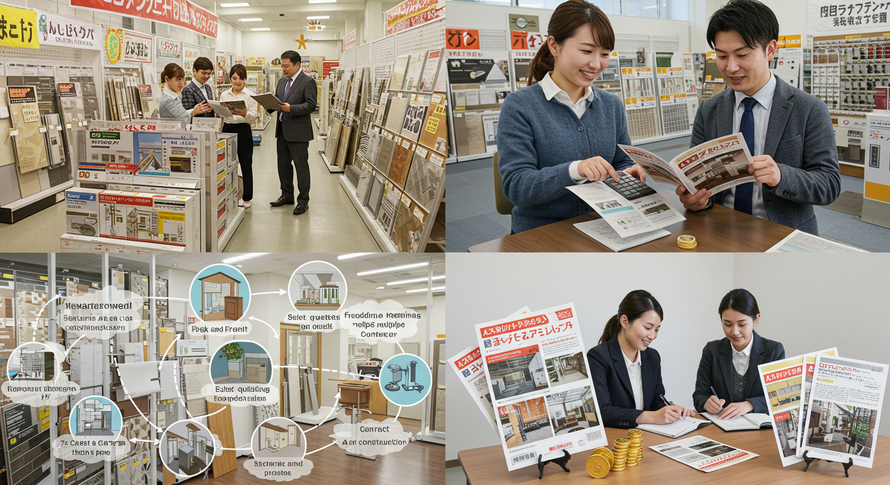
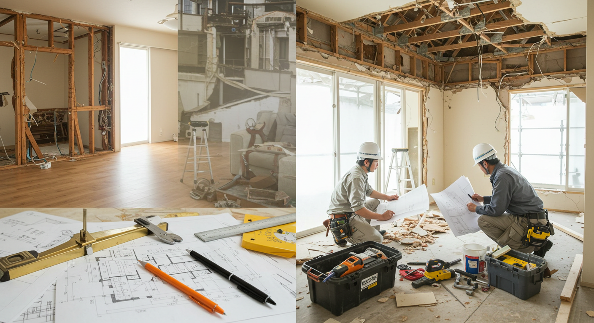
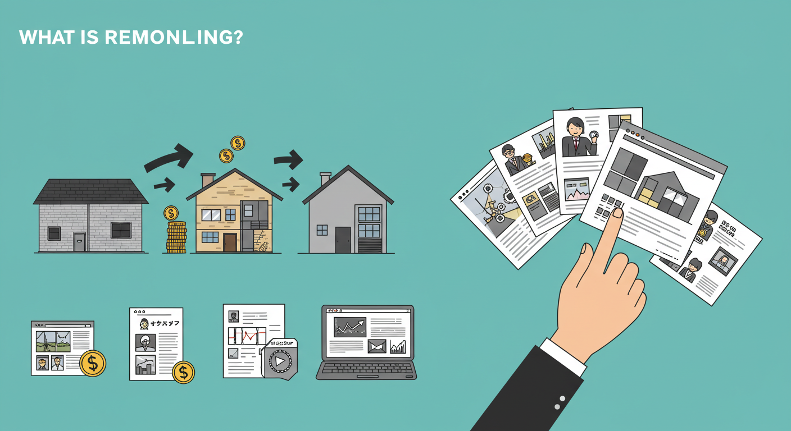
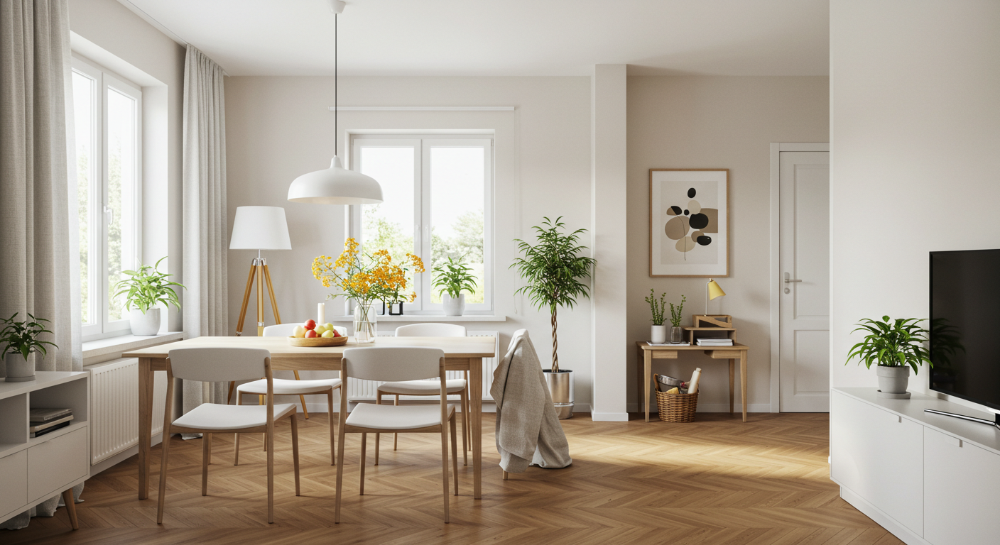

リフォームとは？リノベーションとの違いや費用相場を徹底解説


長年住み慣れた我が家。家族の思い出がたくさん詰まった大切な場所だからこそ、いつまでも快適で安全な空間であってほしいものですよね。しかし、時間とともに建物は少しずつ古くなり、暮らしの形も変わっていきます。「キッチンの使い勝手が悪くなってきたな」「お風呂が寒くて冬はつらい」「子供が独立して使わない部屋ができた」…そんな風に感じたとき、頭に浮かぶのが「リフォーム」という選択肢ではないでしょうか。
リフォームという言葉はよく耳にしますが、いざ考え始めると、さまざまな疑問が湧いてくるものです。そもそもリフォームって具体的にどんなことをするの？よく似た言葉の「リノベーション」とは何が違うのだろう？費用は一体どのくらいかかるのか、想像もつかない…。何から手をつければ良いのか分からず、一歩を踏み出せないでいる方も少なくないかもしれません。
この記事では、そんなリフォームに関するあらゆる疑問に、一つひとつ丁寧にお答えしていきます。リフォームの基本的な定義から、リノベーションとの明確な違い、気になる場所別の費用相場、そして後悔しないための業者の選び方まで、知っておきたい情報を網羅的に解説します。
住まいは、私たちの暮らしの基盤です。その大切な場所を、より自分らしく、より快適なものへと変えていくリフォームは、これからの人生を豊かにするための素晴らしい投資と言えるでしょう。この記事が、あなたの理想の住まいづくりを実現するための、心強いガイドブックとなれば幸いです。さあ、一緒にリフォームの世界を覗いてみましょう。
リフォームとは？基本的な定義と目的を解説

まずは、「リフォーム」という言葉の基本的な意味から理解を深めていきましょう。なんとなく「家を直すこと」というイメージはあっても、その具体的な範囲や目的を正しく知ることで、ご自身の計画がより明確になります。
リフォームの定義と主な工事内容
「リフォーム（Reform）」という英単語は、もともと「改良する」「改善する」といった意味を持っています。日本の住宅業界で使われる「リフォーム」は、主に「老朽化した建物を新築に近い状態に回復させること」を指します。つまり、古くなったり、壊れたり、汚れたりした部分を、元の機能や状態に戻すための改修工事、と考えると分かりやすいでしょう。イメージとしては、「マイナスをゼロに戻す」という感覚に近いかもしれません。
具体的には、以下のような工事がリフォームに含まれます。
- 設備の交換・更新
- 古くなったシステムキッチンを最新のものに入れ替える
- タイルの在来浴室を、保温性の高いユニットバスに交換する
- 和式のトイレを、節水・洗浄機能付きの洋式トイレに変更する
- 古くなった給湯器を、エコキュートなどの高効率なものに交換する
- 内装の修繕・張り替え
- 汚れたり剥がれたりした壁紙（クロス）を新しいものに張り替える
- 傷ついたフローリングや、へこみが目立つクッションフロアを張り替える
- 畳の表替えや、新しい畳への交換
- 室内のドアやふすまを交換する
- 外装のメンテナンス
- 色褪せやひび割れが目立つ外壁を塗装し直す
- 屋根の塗り替えや、傷んだ部分の補修
- 雨漏りの原因となっている箇所を修理する
- 部分的な改修
- 廊下や階段、トイレ、浴室などに手すりを設置する
- 玄関の段差をなくし、スロープを設置する
これらの工事に共通するのは、建物の基本的な構造（骨組み）には手を加えず、比較的部分的な改修が中心であるという点です。住みながら工事を進められるケースも多く、新築や建て替えに比べて、費用や工期を抑えられるのが大きな特徴です。
リフォームを行う主な目的（安全性・快適性の向上など）
では、人々はどのような目的でリフォームを行うのでしょうか。その動機はさまざまですが、大きく分けると以下の5つに分類できます。
1. 老朽化対策・機能回復
住宅も人間と同じように、年月とともに少しずつ年を重ね、劣化していきます。外壁のひび割れ、屋根の色褪せ、水回り設備の故障など、目に見える変化は、住まいの性能が低下しているサインです。こうした経年劣化を放置すると、雨漏りや構造体の腐食など、より深刻な問題につながりかねません。定期的なリフォームによって劣化した部分を修繕・回復させることは、住宅の寿命を延ばし、大切な資産を守るために不可欠なメンテナンスと言えます。
2. 安全性の向上
日々の暮らしの中で、最も優先すべきは「安全」です。特に、地震の多い日本では、耐震性の確保が重要な課題となります。現在の耐震基準を満たしていない古い住宅に耐震補強工事を施すことで、万が一の災害への備えができます。
また、ご家族の高齢化に伴い、バリアフリー化を目的としたリフォームも増えています。廊下や階段への手すりの設置、室内の段差解消、滑りにくい床材への変更などは、家庭内での転倒事故を防ぎ、誰もが安心して暮らせる住環境を実現します。
3. 快適性の向上
「夏は蒸し暑く、冬は足元が冷える」「結露がひどくてカビに悩まされている」といった住まいの悩みは、断熱リフォームで解決できるかもしれません。窓を二重窓にしたり、壁や床に断熱材を追加したりすることで、室内の温熱環境は劇的に改善されます。これにより、快適な室温を保ちやすくなるだけでなく、冷暖房の効率が上がり、光熱費の削減にもつながります。
また、最新の住宅設備は、家事の負担を軽減してくれる機能が満載です。例えば、食器洗い乾燥機付きのキッチン、掃除のしやすいトイレ、浴室暖房乾燥機など、便利な設備を取り入れることで、日々の暮らしにゆとりが生まれます。
4. ライフスタイルの変化への対応
家族の形は、時間とともに変化していきます。子供の誕生や成長、独立、親との同居など、ライフステージが変われば、住まいに求められる機能も変わってきます。
- 子供が生まれたら、安全に遊べるスペースを確保する。
- 子供が大きくなったら、子供部屋を間仕切り壁で二つに分ける。
- 子供が独立したら、空いた部屋を夫婦の趣味の部屋や書斎にする。
- 親との同居を機に、水回りを増設して二世帯住宅にする。
このように、その時々の暮らしに合わせて住まいの形を柔軟に変えられるのも、リフォームの大きな魅力です。
5. デザイン性の向上
毎日過ごす空間だからこそ、自分のお気に入りのデザインに囲まれて暮らしたい、と考えるのは自然なことです。内装の色調を統一したり、好みのテイストの建材を選んだり、間接照明を取り入れて雰囲気のある空間を演出したり…。デザインを一新するリフォームは、住まいの見た目を美しくするだけでなく、住む人の心を満たし、日々の暮らしに彩りを与えてくれます。
リフォームとリノベーションの違いを徹底比較

リフォームとともによく使われる言葉に「リノベーション」があります。この二つは混同されがちですが、実はその目的や工事の規模において明確な違いがあります。それぞれの特徴を正しく理解し、ご自身の希望に合った改修方法を選ぶことが、理想の住まいづくりへの第一歩です。
リフォームの特徴と具体例
前述の通り、リフォームは「老朽化した部分を修繕し、新築時の状態に近づけること」を主な目的とします。いわば「マイナスをゼロに戻す」ための工事です。そのため、工事は比較的部分的・小規模なものが中心となり、工期も短く、費用も抑えやすい傾向にあります。今ある住まいの間取りや骨格はそのままに、不便な点や劣化した部分を改善していくのがリフォームの基本的な考え方です。
【リフォームの具体例】
- 例1：キッチンの交換
15年間使用してきたシステムキッチン。コンロの火がつきにくくなったり、収納の扉ががたついたりといった不具合が出てきたため、最新のシステムキッチンに交換する。位置や大きさは変えず、既存の設備と入れ替えるだけの工事。 - 例2：内装の張り替え
リビングの壁紙が日焼けで黄ばみ、子供がつけた傷も目立ってきた。部屋の雰囲気を明るくするため、壁紙と、傷が目立つ床のフローリングを新しく張り替える。 - 例3：外壁の塗り替え
築12年が経過し、外壁に細かなひび割れ（クラック）や、触ると白い粉がつくチョーキング現象が見られるようになった。建物の防水性能を回復させるため、高圧洗浄で汚れを落とした後、耐久性の高いシリコン塗料で外壁を塗り直す。 - 例4：ユニットバスの交換
冬場の寒さが厳しく、タイルの目地にカビが生えやすい在来工法の浴室。掃除がしやすく、保温性の高い最新のユニットバスに交換する。同時に、浴室暖房乾燥機も設置して快適性を高める。
これらの例のように、リフォームは「原状回復」や「機能の更新」という側面に重きを置いた改修と言えます。
リノベーションの特徴と具体例
一方、「リノベーション（Renovation）」は「刷新」「革新」といった意味を持つ言葉です。住宅におけるリノベーションは、既存の建物に大規模な工事を施し、新築時とは異なる、新たな価値や機能を付け加えることを目的とします。リフォームが「マイナスをゼロに戻す」作業であるのに対し、リノベーションは「ゼロからプラスを生み出す」ための改修と表現できます。
リノベーションでは、間取りの変更を伴うことが多く、時には建物の骨組み（構造躯体）だけを残して内装や設備をすべて解体する「スケルトンリフォーム」と呼ばれる大掛かりな工事を行うこともあります。これにより、既存の枠にとらわれない自由な空間設計が可能になります。
【リノベーションの具体例】
- 例1：間取りの大幅変更
壁で細かく仕切られていた3LDKの中古マンション。間仕切り壁を撤去して、光と風が通り抜ける広々としたLDKを持つ1LDKに変更。リビングの一角にはガラス張りの書斎スペースを新たに設ける。 - 例2：ライフスタイルの変化に対応
子供たちが独立して使わなくなった2階の子供部屋2つ。その間の壁を取り払い、一つの大きな空間に。半分を夫婦の寝室、もう半分を大画面で映画を楽しめるシアタールームと、たっぷりの収納を備えたウォークインクローゼットに作り変える。 - 例3：性能の向上とデザインの刷新
築40年の木造戸建て住宅。耐震性が不安で、冬は非常に寒い。そこで、一度内装をすべて解体し、基礎や柱の補強を行って耐震性を向上。壁・床・天井に高性能な断熱材を充填し、窓は断熱性の高いペアガラスに交換。内装は、古い梁をあえて見せるデザインにするなど、現代的な暮らしやすさと古民家風の趣を両立させた空間に生まれ変わらせる。 - 例4. 用途変更（コンバージョン）
もともと倉庫として使われていた建物を、住居として暮らせるように改修する。断熱や水回りの設備を新たに設け、大きな窓を取り付けて採光を確保し、開放的な住空間を創出する。
このように、リノベーションは住まいの価値を根本から見直し、住む人のライフスタイルやこだわりに合わせて、全く新しい空間へと生まれ変わらせる、より創造的な改修と言えるでしょう。
どちらを選ぶ？あなたに合った改修方法の判断ポイント
リフォームとリノベーション、どちらが良い・悪いというわけではありません。大切なのは、ご自身の目的や予算、住まいの現状に合わせて、最適な方法を選択することです。ここでは、どちらを選ぶべきか迷ったときの判断ポイントをいくつかご紹介します。
【判断ポイント】
| 観点 | リフォームがおすすめな人 | リノベーションがおすすめな人 |
|---|---|---|
| 目的 | ・設備の不具合を解消したい ・内装をきれいにしたい ・部分的な機能性を向上させたい |
・間取りを大きく変えたい ・デザインを根本から変えたい ・住宅の性能（耐震・断熱）を抜本的に改善したい |
| 予算 | ・費用をできるだけ抑えたい ・必要な箇所に絞って改修したい |
・新築よりはコストを抑えつつ、注文住宅のような自由度を求めたい ・住宅ローンを利用して大規模な改修をしたい |
| 工期 | ・短期間で工事を終えたい ・住みながら工事を進めたい |
・工期が長くなっても構わない ・仮住まいも視野に入れている |
| 現状の間取り | ・今の間取りに大きな不満はない | ・今の間取りがライフスタイルに合っていない ・動線が悪く、暮らしにくいと感じる |
| 建物の状態 | ・築年数が比較的浅い ・構造や基礎に大きな問題はない |
・築年数が古い（特に旧耐震基準の建物） ・配管や断熱など、見えない部分の劣化が心配 |
まずは、なぜ住まいを改修したいのか、その「目的」を明確にすることが最も重要です。
「お風呂が寒い」という悩みであれば、ユニットバスの交換という「リフォーム」で解決できます。しかし、「家族のコミュニケーションがとれる、明るく開放的なリビングが欲しい」という願いであれば、間取り変更を伴う「リノベーション」が必要になるかもしれません。
ご家族でじっくりと話し合い、今の住まいの問題点や、将来どんな暮らしがしたいのかを共有することから始めてみてください。そうすることで、自ずと進むべき道が見えてくるはずです。
リフォームのメリット

住み慣れた我が家に手を入れるリフォームには、建て替えや住み替えにはない、多くのメリットがあります。ここでは、リフォームがもたらす主な3つの利点について、具体的に見ていきましょう。
メリット１．住まいの安全性・快適性が向上する
リフォームの最も大きなメリットの一つは、日々の暮らしの質を直接的に向上させられる点です。長年住んでいると当たり前になってしまった不便さや不安も、リフォームによって大きく改善することができます。
安全性の向上
例えば、耐震リフォームは、家族の命を守るための重要な投資です。1981年以前の旧耐震基準で建てられた住宅は、大きな地震に対しての備えが十分でない可能性があります。壁に筋交いを入れたり、金物で補強したり、基礎を修繕したりといった耐震補強工事を行うことで、万が一の災害時にも倒壊のリスクを低減させ、安心して暮らせる住まいを実現できます。
また、高齢化社会においてバリアフリーリフォームの重要性も高まっています。廊下や浴室、トイレに手すりを一本取り付けるだけでも、転倒のリスクは大きく減少します。玄関や室内のわずかな段差をなくす工事は、車椅子での移動をスムーズにするだけでなく、小さなお子様がつまずくのを防ぐ効果もあります。こうした小さな配慮の積み重ねが、家族全員にとっての安全な環境を作り出すのです。
快適性の向上
毎日の暮らしをより心地よいものにするのも、リフォームの得意分野です。特に効果を実感しやすいのが、断熱リフォームです。壁や天井に断熱材を追加したり、既存の窓の内側にもう一つ窓を設置する「内窓（二重窓）」を取り付けたりすることで、外気の影響を受けにくくなります。その結果、夏は涼しく冬は暖かい室内環境が保たれ、冷暖房に頼りすぎることなく快適に過ごせます。これは光熱費の節約という経済的なメリットにも直結します。
また、最新の住宅設備は、私たちの暮らしを豊かにする工夫に満ちています。例えば、キッチンリフォームで導入される食洗機は、面倒な皿洗いの手間から解放してくれますし、浴室リフォームで設置される浴室暖房乾燥機は、冬場のヒートショックを防ぐとともに、雨の日の洗濯物干しにも活躍します。こうした設備の更新は、家事の効率化を図り、家族と過ごす時間や趣味の時間を増やすことにも繋がるでしょう。
メリット２．住宅の資産価値を維持・向上できる
住宅は大切な資産ですが、残念ながら建物部分は経年とともにその価値が減少していくのが一般的です。しかし、適切な時期にリフォームを行うことで、その価値の低下を緩やかにし、場合によっては価値を向上させることも可能です。
資産価値の維持
建物の寿命を縮める最大の要因は、雨水の侵入です。外壁のひび割れや屋根の劣化を放置すると、そこから雨水が内部に侵入し、建物の構造体である柱や梁を腐らせてしまう原因となります。定期的に外壁や屋根の塗装・補修といったメンテナンスリフォームを行うことは、建物の防水性を保ち、構造体を守る上で非常に重要です。これは、人間で言えば健康診断や予防接種のようなもの。大きな問題が発生する前に手を打つことで、住宅の健康寿命を延ばし、資産価値を維持することに繋がります。
同様に、キッチンや浴室といった水回りも、劣化が進みやすい場所です。設備の機能回復はもちろんのこと、床下の配管からの水漏れなどを防ぐためにも、定期的なリフォームが推奨されます。
資産価値の向上
リフォームは、将来的にその住宅を売却したり、賃貸に出したりする際にも有利に働くことがあります。例えば、時代遅れになってしまった間取りや内装を、現代のライフスタイルに合ったものに更新することで、物件の魅力が高まります。暗くて使いにくかった和室を、明るいフローリングの洋室に変えたり、収納スペースを増やしたりするリフォームは、買い手や借り手にとって大きなアピールポイントになります。
また、耐震性や断熱性といった住宅の基本性能を向上させるリフォームも、資産価値の向上に大きく貢献します。目に見える部分だけでなく、住宅の「性能」という付加価値を高めることが、他の物件との差別化に繋がり、より良い条件での取引を可能にするのです。ただし、リフォームにかかった費用がそのまま売却価格に上乗せされるわけではない点は、理解しておく必要があります。
メリット３．ライフスタイルに合わせた空間を実現できる
建て替えや住み替えは、環境が大きく変わる一大イベントですが、リフォームは「愛着のある我が家に住み続けながら」、今の暮らしに最適な空間へとアップデートできるのが大きな魅力です。
家族の成長や変化は、住まいに求められる役割を変えていきます。子供が小さいうちは、リビングの一角に畳コーナーを設けて、安全に遊べてお昼寝もできるスペースとして活用。子供が学生になれば、リビングにカウンターを設置して、親の目の届く場所で勉強できるスタディコーナーに。そして子供が独立した後は、そのスペースを夫婦の趣味の空間に変える…といったように、リフォームならその時々のニーズに柔軟に対応できます。
近年では、在宅ワークの普及に伴い、自宅に快適なワークスペースを求める声も増えています。使っていない部屋を書斎にしたり、リビングの隅に集中できるカウンターデスクを造作したりと、働き方に合わせて住まいをカスタマイズできるのもリフォームならではです。
このように、大規模な引越しを伴わずに、住み慣れた地域、慣れ親しんだご近所付き合いを維持したまま、暮らしの変化に合わせて住環境を最適化できる点は、リフォームが持つかけがえのないメリットと言えるでしょう。
リフォームのデメリット

多くのメリットがある一方で、リフォームには注意すべき点や、事前に理解しておくべきデメリットも存在します。計画を立てる際には、これらのマイナス面もしっかりと把握し、対策を講じることが成功の鍵となります。
デメリット１．想定以上の費用がかかる可能性がある
リフォームにおいて最も注意したいのが、予期せぬ追加費用が発生するリスクです。当初の見積もり金額で収まるだろうと考えていても、工事を進めていく中で、想定外の事態が起こることがあります。
その最大の原因は、壁や床、天井を解体して初めて判明する建物の内部的な問題です。
- 壁を剥がしてみたら、柱がシロアリの被害にあっていた。
- 床をめくってみたら、湿気で土台が腐っていた。
- 天井裏を覗いてみたら、過去の雨漏りで下地が傷んでいた。
- 浴室を解体したら、配管がひどく劣化しており交換が必要だった。
これらは、事前の現地調査だけでは発見が難しいケースが多く、もしこのような問題が見つかった場合、その補修工事が追加で必要になります。当然、その分の費用と工期が上乗せされることになります。
また、工事が始まってから「やっぱり壁紙はこっちのデザインの方が良いかも」「ここにコンセントを追加したい」といった施主側の要望による仕様変更や追加工事も、費用が増加する一因です。
【対策】
こうした事態に備え、リフォーム計画を立てる際には、必ず「予備費」を確保しておくことが重要です。一般的には、工事費総額の10%～20%程度を予備費として見ておくと、いざという時に慌てずに対応できます。
また、契約前の現地調査の際に、リフォーム業者に「解体後に発生しうるリスクにはどのようなものがありますか？」と具体的に質問し、起こりうる問題とその際の概算費用について、事前に説明を求めておくことも有効な対策です。
デメリット２．工事期間中の生活への影響がある
リフォームは、建て替えと違って住みながら工事ができるケースが多いのがメリットですが、それは同時に、工事が日常生活に直接的な影響を及ぼすというデメリットにもなります。
騒音・振動・粉塵の発生
解体作業や電動工具の使用により、工事期間中は大きな音や振動が避けられません。また、木材や石膏ボードを切断する際には、かなりの量の粉塵が発生します。工事しない部屋にも埃が入り込まないよう、業者は養生（シートなどで保護すること）を徹底しますが、それでも完璧に防ぐことは難しく、家具や家財が汚れてしまう可能性があります。
これらの騒音や振動は、ご近所トラブルの原因にもなりかねません。工事が始まる前には、業者と一緒に近隣の住宅へ挨拶に伺い、工事の期間や内容について説明し、理解を得ておくことが不可欠です。
職人の出入りとプライバシー
工事期間中は、朝から夕方まで、多くの職人さんが自宅に出入りすることになります。見知らぬ人が家の中にいる状況は、特に最初のうちはストレスに感じるかもしれません。プライバシーの確保が難しくなり、貴重品の管理にも気を配る必要があります。
設備の利用制限
リフォームの箇所によっては、生活に欠かせない設備が一時的に使えなくなる期間が発生します。
- キッチンリフォーム中：調理ができないため、外食やお弁当、レトルト食品などで対応する必要があります。
- 浴室リフォーム中：お風呂に入れないため、近所の銭湯やスポーツジムのシャワーを利用するなどの対策が必要です。
- トイレリフォーム中：数時間～1日程度使えなくなるため、近くの公園やコンビニのトイレを利用するか、仮設トイレを設置してもらう必要があります。
これらの不便な期間がどのくらい続くのか、事前に工程表でしっかりと確認し、代替手段を計画しておくことが大切です。工事の規模が大きく、長期間にわたって生活への支障が出る場合は、仮住まいへの一時的な引越しを検討する必要も出てきます。その場合、家賃や引越し費用といった追加のコストも考慮しなければなりません。
デメリット３．信頼できる業者選びが難しい場合がある
リフォームを成功させるためには、信頼できるパートナー、つまり優良なリフォーム業者を見つけることが何よりも重要です。しかし、リフォーム業界には、残念ながらすべての業者が誠実であるとは限らないという現実があります。
悪質な業者とのトラブル
国民生活センターには、リフォームに関する相談が数多く寄せられています。その中には、「必要のない工事まで勧められて高額な契約をしてしまった」「見積もりにはない追加料金を次々と請求された」「工事がずさんで、すぐに不具合が発生した」といった悪質な業者とのトラブルも含まれます。特に、突然訪問してきて「屋根が壊れていますよ」などと不安を煽り、契約を急がせるような業者には注意が必要です。
業者による得意分野の違い
悪質な業者でなくても、リフォーム会社にはそれぞれ得意・不得意な分野があります。
- デザイン性の高い、おしゃれな内装リフォームを得意とする会社
- キッチンや浴室など、水回りの設備交換に特化した会社
- 耐震補強や断熱改修など、住宅性能の向上に関する専門知識が豊富な会社
- 外壁塗装や屋根工事など、外装メンテナンスを専門とする会社
例えば、デザインにこだわりたいのに、水回り専門の会社に依頼してしまっては、満足のいく提案は得られないかもしれません。自分のやりたいリフォームの内容と、業者の強みが一致しているかを見極めることが、ミスマッチを防ぐために非常に重要です。
この「業者選び」という課題については、後の章でさらに詳しく、具体的な見極め方やポイントを解説していきます。
【場所別】主なリフォームの種類と費用相場

ここからは、皆さんが最も関心を寄せられるであろう、具体的なリフォームの費用について見ていきましょう。場所別に、主な工事内容と、その費用相場、工期の目安をご紹介します。
ただし、ここで示す費用はあくまで一般的な目安です。使用する設備のグレード、材料の種類、建物の状況、工事の規模によって金額は大きく変動します。正確な費用を知るためには、必ず複数のリフォーム会社から見積もりを取るようにしてください。
水回りのリフォーム（キッチン・浴室・トイレなど）
キッチン、浴室、トイレ、洗面所といった水回りは、毎日使う場所だからこそ、劣化も早く、リフォームのニーズが高いエリアです。最新の設備は機能性や清掃性、省エネ性能が格段に向上しており、リフォームによる満足度を実感しやすい場所でもあります。
【キッチン】
- 費用相場：50万円 ～ 150万円
- 工期の目安：4日 ～ 1週間
キッチンのリフォームで最も一般的なのは、既存のシステムキッチンを新しいものに入れ替える工事です。費用は、選ぶシステムキッチンのグレードによって大きく変わります。シンプルな機能の普及価格帯のものであれば50万円前後から可能ですが、高級な素材を使った天板や、多機能なコンロ、海外製の食洗機などを採用すると、150万円を超えることも珍しくありません。
壁付けキッチンを対面式のアイランドキッチンやペニンシュラキッチンに変更するなど、レイアウトを変更する場合は、給排水管やガス管、電気配線の移設工事、床や壁の補修も必要になるため、費用は高額になる傾向があります。
【浴室】
- 費用相場：50万円 ～ 150万円
- 工期の目安：4日 ～ 1週間
浴室リフォームの主流は、既存のユニットバスを新しいユニットバスに交換する工事、または、床や壁がタイルでできている在来工法の浴室を、清掃しやすく保温性の高いユニットバスに交換する工事です。
ユニットバス本体の価格は、サイズやグレードによって異なり、浴室暖房乾燥機やジェットバス、肩湯といったオプション機能を追加すると価格は上がります。
特に、在来工法の浴室からユニットバスへのリフォームは、解体してみると土台や柱が腐食していることがあり、その補修費用が追加でかかる可能性があるため、予算には余裕を見ておくと安心です。
【トイレ】
- 費用相場：15万円 ～ 50万円
- 工期の目安：半日 ～ 2日
トイレリフォームは、比較的短時間・低コストで行えるのが魅力です。便器の交換だけであれば15万円程度から可能ですが、多くの場合は、壁紙や床材（クッションフロア）の張り替えも同時に行い、空間全体を一新します。
最近人気のタンクレストイレは、デザインがすっきりしていて掃除がしやすい反面、手洗い器を別に設置する必要があるため、その分費用が高くなることがあります。また、和式トイレから洋式トイレへの変更は、床の解体や給排水管の工事が必要になるため、30万円以上の費用がかかるのが一般的です。
【洗面所】
- 費用相場：15万円 ～ 50万円
- 工期の目安：半日 ～ 2日
洗面化粧台の交換が主な工事内容です。洗面台の横幅（サイズ）、収納キャビネットの有無、鏡の機能（曇り止めヒーターやLED照明など）、水栓金具のデザインなどによって価格が変わります。
洗面所は湿気がこもりやすい場所なので、リフォームの際には、調湿効果や消臭効果のある壁材を選んだり、収納を増やして整理整頓しやすくしたりといった工夫もおすすめです。
外壁・屋根のリフォーム
外壁や屋根は、常に雨風や紫外線にさらされており、住まいを自然環境から守る重要な役割を担っています。見た目の美しさを保つだけでなく、建物の寿命を延ばすためにも、10年～15年周期での定期的なメンテナンスが推奨されます。
【外壁】
- 費用相場：80万円 ～ 200万円（30坪程度の一般的な戸建ての場合）
- 工期の目安：2週間 ～ 1ヶ月
外壁リフォームの主な方法は「塗装」「張り替え」「カバー工法」の3つです。
最も一般的なのは「塗装」で、費用の大部分を占めるのが、使用する塗料の価格と、作業のために必要な足場の設置費用です。塗料には、アクリル、ウレタン、シリコン、フッ素、無機塗料など様々な種類があり、耐久年数が長いものほど価格も高くなります。
外壁材自体の劣化が激しい場合は、既存の外壁を剥がして新しいものに張り替える「張り替え」や、既存の外壁の上から新しい外壁材を重ねて張る「カバー工法」が選択されます。これらは塗装に比べて費用は高くなりますが、外観のイメージを大きく変えることができます。
【屋根】
- 費用相場：50万円 ～ 200万円
- 工期の目安：1週間 ～ 2週間
屋根のリフォームも、外壁と同様に「塗装」「葺き替え」「カバー工法」が主な工事内容です。
スレート（コロニアル）屋根など、塗装が可能な屋根材の場合は、定期的な塗り替えメンテナンスが基本となります。
屋根材の劣化が著しい場合や、雨漏りが発生している場合は、既存の屋根材をすべて撤去して新しいものに取り替える「葺き替え」や、既存の屋根の上に新しい屋根材を重ねる「カバー工法」が必要になります。
外壁と屋根のリフォームを同時に行うと、足場の設置費用が一度で済むため、別々に行うよりもトータルコストを抑えられるというメリットがあります。
リビング・居室のリフォーム
家族が多くの時間を過ごすリビングや、プライベートな時間を過ごす寝室・子供部屋などの居室は、内装を少し変えるだけでも、暮らしの快適さや気分が大きく変わります。比較的費用を抑えやすく、手軽に始められるリフォームも多いのが特徴です。
【壁紙（クロス）の張り替え】
- 費用相場：4万円 ～ 6万円（6畳の部屋の壁・天井）
- 工期の目安：1日 ～ 2日
最も手軽に部屋の雰囲気を一新できるリフォームです。費用は、選ぶ壁紙の種類と施工面積によって決まります。安価でデザインも豊富な「量産品クロス」と、機能性やデザイン性に優れた「1000番台クロス」があり、後者の方が価格は高くなります。一面だけアクセントとして色や柄の違う壁紙を使う「アクセントクロス」も人気です。
【床材の張り替え】
- 費用相場：10万円 ～ 20万円（6畳の部屋をフローリングに）
- 工期の目安：1日 ～ 3日
床材を新しくするだけで、部屋の印象は大きく変わります。既存の床の上に新しい床材を重ねて張る「重ね張り（カバー工法）」は、工期が短く費用も抑えられます。既存の床を剥がして新しい床材を張る「張り替え」は、床下の状態も確認できるメリットがありますが、費用と工期はかかります。フローリングのほか、クッションフロアやカーペットタイルなど、用途や予算に合わせて様々な素材から選べます。
【間取り変更】
- 費用相場：10万円 ～ 100万円以上
- 工期の目安：数日 ～ 数週間
壁を撤去して二つの部屋を一つにしたり、逆に広い部屋に壁を新設して部屋を分けたりする工事です。単純な壁の撤去・新設であれば比較的安価にできますが、建物を支える重要な役割を持つ「耐力壁」は撤去できないため、事前の構造チェックが必須です。電気配線や照明器具の移設なども伴う場合は、費用が高くなります。
その他（バリアフリー・耐震など）のリフォーム
将来の暮らしを見据え、住まいの基本性能を高めるリフォームも重要です。これらのリフォームには、国や自治体から補助金や助成金が支給される制度が多く用意されているため、計画する際にはぜひ活用を検討しましょう。
【バリアフリーリフォーム】
- 費用相場：数万円 ～ 数百万円
- 工事内容と費用例
- 手すりの設置：3万円 ～ 10万円
- 室内の段差解消：5万円 ～ 20万円
- 開き戸から引き戸への交換：10万円 ～ 25万円
- ホームエレベーターの設置：250万円 ～
介護保険制度を利用すると、要支援・要介護認定を受けている場合、住宅改修費用の支給（上限あり）を受けることができます。また、自治体独自の補助金制度がある場合も多いので、お住まいの市区町村の窓口に問い合わせてみましょう。
【耐震リフォーム】
- 費用相場：25万円 ～ 200万円以上
- 工期の目安：1週間 ～ 1ヶ月以上
耐震リフォームを行う前には、まず専門家による「耐震診断」を受ける必要があります（費用相場：5万円～40万円）。診断結果に基づき、壁の補強、基礎のひび割れ補修、屋根を軽い素材に変える（軽量化）などの補強工事を行います。工事の規模や内容によって費用は大きく異なります。こちらも、多くの自治体で診断や工事に対する補助金制度が設けられています。
【断熱リフォーム】
- 費用相場：数万円 ～ 数十万円
- 工事内容と費用例
- 内窓の設置：5万円 ～ 15万円／箇所
- 窓ガラスの交換：3万円 ～ 10万円／箇所
- 壁・床・天井への断熱材充填：50万円 ～
断熱リフォームは、快適性の向上と省エネに直結するため、国も積極的に推進しており、「先進的窓リノベ事業」や「子育てエコホーム支援事業」など、手厚い補助金制度が用意されています（※制度内容は年度によって変わります）。これらを活用することで、自己負担を大幅に抑えてリフォームを行うことが可能です。
リフォーム作業の流れ

リフォームを考え始めてから、工事が完了して新しい生活がスタートするまでには、いくつかのステップがあります。全体的な流れを把握しておくことで、計画をスムーズに進め、トラブルを防ぐことができます。
流れ１．リフォーム検討から完成までの一般的な流れ
リフォームの規模にもよりますが、一般的には相談から工事完了まで3ヶ月から半年程度の期間を見ておくと良いでしょう。
Step1：情報収集・イメージづくり（工事開始の3～6ヶ月前）
すべての始まりは、ここからです。まずは、なぜリフォームをしたいのか、今の住まいのどこに不満があるのか、そしてリフォームでどんな暮らしを実現したいのかを、ご家族でじっくりと話し合いましょう。
「朝の準備が重なるので、洗面台が広いと嬉しい」「家族が集まるリビングをもっと明るくしたい」「収納が少なくて物が片付かない」など、具体的な要望や不満をリストアップしてみるのがおすすめです。
同時に、インテリア雑誌やインターネットの施工事例サイト、リフォーム会社のホームページなどを見て、理想の空間のイメージを膨らませていきます。気に入った写真やデザインがあれば、切り抜いたり、保存したりしておくと、後で業者にイメージを伝える際に役立ちます。
この段階で、リフォームにかけられる予算の大枠も決めておきましょう。
Step2：リフォーム会社探し・相談
イメージと予算が固まってきたら、次は依頼するリフォーム会社を探します。インターネット検索や、知人・友人からの紹介、住宅設備メーカーのショールームからの紹介など、探し方はいろいろあります。
気になる会社が見つかったら、まずは電話やホームページの問い合わせフォームから連絡を取り、相談のアポイントを取ります。この時、Step1でまとめた要望やイメージ、予算を伝えることで、その後の話がスムーズに進みます。
Step3：現地調査・プラン提案・見積もり
相談した会社の中から、相性が良さそうな会社を2～3社に絞り、自宅に来てもらって「現地調査」を依頼します。現地調査では、担当者がリフォーム希望箇所の寸法を測ったり、建物の構造や劣化状況を確認したりします。
後日、現地調査の結果とヒアリングした要望に基づいて、各社から具体的なリフォームプランと、詳細な見積書が提出されます。プランには、図面やパース、使用する設備のカタログなどが含まれていることが多く、リフォーム後の姿を具体的にイメージすることができます。
Step4：業者選定・契約
複数の会社から提出されたプランと見積もりを、じっくり比較検討します。この時、単純な金額の安さだけで決めるのは禁物です。
- 提案されたプランは、自分たちの要望を本当に満たしているか？
- 見積もりの内容は、詳細で分かりやすいか？（「一式」ばかりでなく、内訳が明記されているか）
- 担当者は、親身に相談に乗ってくれるか？信頼できる人柄か？
これらの点を総合的に判断し、最も信頼できると感じた1社を選びます。依頼する会社が決まったら、工事内容や金額、工期などを最終確認し、「工事請負契約」を結びます。
Step5：詳細打ち合わせ・着工準備
契約後、工事が始まる前に、さらに詳細な仕様を決める打ち合わせを行います。壁紙の色や柄、床材の種類、キッチンパネルの色、ドアノブのデザインなど、細部にわたって決めていきます。ショールームに足を運び、実物を見ながら選ぶことも多いです。
仕様がすべて確定したら、最終的な図面を作成し、工事のスケジュール（工程表）が決まります。工事期間中に仮住まいが必要な場合は、この時期に手配を進めます。また、着工前には、ご近所への挨拶回りも行っておきましょう。
Step6：着工
いよいよ工事のスタートです。工事期間中は、定期的に現場に顔を出し、工事の進捗状況を確認することをおすすめします。計画通りに進んでいるか、何か問題は起きていないか、自分の目で確かめることで安心できますし、職人さんとのコミュニケーションも生まれます。疑問点や、イメージと違うと感じる点があれば、遠慮せずに現場監督や担当者に伝えましょう。
Step7：完了検査・引き渡し
すべての工事が完了したら、リフォーム会社の担当者と一緒に、契約書や設計図通りに仕上がっているかをチェックします。これを「完了検査（施主検査）」と呼びます。傷や汚れがないか、設備は正常に作動するかなど、隅々まで細かく確認してください。もし修正してほしい箇所があれば、この時点で伝え、手直しをしてもらいます。
すべての確認が終わり、問題がなければ、工事完了の書類にサインをし、鍵や設備の保証書、取扱説明書などを受け取って「引き渡し」となります。
Step8：アフターサービス
引き渡し後、実際に生活を始めてから不具合が見つかることもあります。リフォーム会社によって、定期的な点検や保証制度が設けられています。保証の内容や期間、トラブルがあった際の連絡先などを、契約時にしっかりと確認しておくことが大切です。
流れ２．契約時の注意点とトラブル回避策
リフォームにおけるトラブルの多くは、契約内容の確認不足や、業者とのコミュニケーション不足から生じます。後悔しないためにも、契約時には以下の点に注意しましょう。
- 見積書の内容を細かくチェックする
見積書に「○○工事一式」という曖昧な表記が多い場合は注意が必要です。どのような材料をどれだけ使い、どのような工事を行うのか、その単価と数量が明記されているかを確認しましょう。また、使用するキッチンやトイレなどの設備は、メーカー名や商品名、型番まで記載されているかをチェックします。これにより、「思っていたものと違うグレードの製品が設置された」といったトラブルを防げます。 - 契約書を隅々まで読む
契約書は法的な効力を持つ重要な書類です。内容をよく理解しないままサインをするのは絶対にやめましょう。工事内容、請負金額、支払い条件（着手金・中間金・残金の割合と支払時期）、工事期間（着工日と完成日）、遅延した場合の損害金（遅延損害金）の規定などを必ず確認します。 - 保証・アフターサービスの内容を書面で確認する
「工事が終わったら、連絡が取れなくなった」という事態を避けるためにも、保証制度は重要です。工事箇所ごとに保証期間が何年あるのか、どのような不具合が保証の対象になるのかを、口約束ではなく、必ず「保証書」などの書面で発行してもらいましょう。リフォーム瑕疵（かし）保険に加入している業者であれば、万が一業者が倒産してしまった場合でも保証が受けられるため、より安心です。 - 追加工事のルールを明確にしておく
工事中に追加や変更の要望が出た場合、その都度、口頭で依頼するのはトラブルのもとです。追加工事が発生する際には、必ず事前にその内容と費用について書面で見積もりをもらい、双方合意の上で工事を進める、というルールを業者と共有しておきましょう。 - 打ち合わせの記録を残す
担当者との打ち合わせ内容は、メモを取ったり、議事録を作成したりして、記録として残しておくことをお勧めします。言った・言わないの水掛け論を防ぎ、双方の認識のズレをなくすために有効です。
リフォーム業者の選び方

リフォームの成否は、業者選びで9割が決まると言っても過言ではありません。しかし、数多くある会社の中から、どうやって信頼できる一社を見つければ良いのでしょうか。ここでは、優良なリフォーム業者を見極めるためのポイントを解説します。
選び方１．信頼できるリフォーム業者の選び方（相見積もりなど）
まずは、リフォームを手がける業者の種類と、それぞれの特徴を知っておきましょう。
【リフォーム業者の種類と特徴】
- 工務店：地域に密着して、新築からリフォームまで幅広く手がけています。設計から施工まで一貫して管理することが多く、比較的自由度の高いプランニングが可能です。社長や職人さんとの距離が近く、細かな要望にも柔軟に対応してくれる傾向があります。
- リフォーム専門会社：リフォーム工事を専門に行う会社です。大手から中小まで規模は様々で、施工実績が豊富なのが強み。水回りや外装など、特定の分野に特化した専門会社もあります。
- ハウスメーカー：自社で建てた住宅のリフォームを主に行う「リフォーム部門」を持っていることが多いです。建物の構造を熟知しているため、安心して任せられるのが最大のメリット。ただし、他社で建てた住宅のリフォームは断られたり、費用が割高になったりする場合があります。
- 設計事務所：デザイン性やプランニングにこだわりたい場合におすすめです。建築士が施主の代理人として、設計から工事監理までを行います。施工は別の工務店が行うため、設計料と工事費が別にかかります。
- その他（設備メーカー、家電量販店、ホームセンターなど）：キッチンやトイレといった特定の商品販売と、それに伴う設置工事をセットで提供しています。価格が明瞭で気軽に依頼しやすいのがメリットですが、対応できる工事の範囲は限られます。
【信頼できる業者を見極める10のチェックポイント】
- 建設業許可や資格の有無：500万円以上の工事を行うには「建設業許可」が必要です。また、建築士や建築施工管理技士といった国家資格を持つスタッフが在籍しているかは、技術力を測る一つの指標になります。
- リフォーム関連団体への加盟：国土交通省が後援する（公財）住宅リフォーム・紛争処理支援センターの「リフォネット」に登録されているかなど、公的な団体への加盟状況も信頼性の判断材料になります。
- 豊富な施工実績：会社のホームページなどで、自分がやりたいリフォームと近い施工事例が豊富にあるかを確認しましょう。実績の多さは、経験とノウハウの豊富さを示します。
- 事務所の有無：事務所がきちんと構えられているか。地域に根ざして長く営業している会社は、信頼性が高い傾向にあります。
- 担当者の対応：こちらの話を親身に聞いてくれるか。専門用語を避け、分かりやすく説明してくれるか。メリットだけでなく、デメリットやリスクについても正直に話してくれるか。レスポンスは早いか。担当者との相性は非常に重要です。
- 詳細な見積もり：前述の通り、内訳が明記された詳細な見積書を提出してくれるか。不明な点を質問した際に、丁寧に回答してくれるかもチェックしましょう。
- 保証・アフターサービスの充実：工事後の保証制度や、定期点検の有無などを書面で明確に示してくれるか。リフォーム瑕疵保険に加入しているかも確認しましょう。
- 良いことばかり言わない：構造上できないことや、予算的に難しいことに対して、「できません」「難しいです」と正直に伝えてくれる業者は、むしろ信頼できます。安易に「できます」と請け負う業者には注意が必要です。
- 近所での評判：もし可能であれば、その業者が過去に工事を手がけた近所の家の人に、評判を聞いてみるのも有効な方法です。
- 相見積もりを取る：最も重要なのが、複数の業者から見積もりを取る「相見積もり」です。
【相見積もりの重要性と賢い進め方】
相見積もりは、単に価格を比較するためだけのものではありません。
- 適正価格の把握：複数の見積もりを比較することで、自分のやりたいリフォームの費用相場が分かります。
- プランの比較検討：同じ要望を伝えても、業者によって提案されるプランは様々です。自分では思いつかなかったアイデアに出会えることもあります。
- 業者の比較：見積もりの内容や、担当者の対応力を比較することで、どの業者が最も信頼できるかを判断する材料になります。
相見積もりは、3社程度に依頼するのが一般的です。多すぎると、比較検討が煩雑になってしまいます。依頼する際には、すべての会社に同じ要望、同じ予算を伝えることが重要です。条件が異なると、公平な比較ができなくなってしまいます。
そして、最終的に業者を選ぶ際には、金額だけで判断しないでください。見積もりが極端に安い業者は、必要な工程を省いたり、質の低い材料を使ったりする「手抜き工事」のリスクや、後から高額な追加料金を請求されるリスクが隠れている可能性があります。
提案されたプランの内容、担当者の人柄や専門知識、会社の信頼性などを総合的に評価し、「この会社になら、大切な我が家を安心して任せられる」と思えるパートナーを選ぶことが、リフォーム成功への一番の近道です。
リフォームで理想の住まいを実現するために

ここまで、リフォームの基本から具体的な費用、業者選びのポイントまで、詳しく解説してきました。リフォームは、単に古くなったものを新しくするだけの作業ではありません。それは、これからのご自身の、そしてご家族の暮らしを、より安全で、より快適で、より豊かなものにするための、未来への大切な投資です。
リフォームを成功させるために、最も大切な鍵は「準備」にあります。
まず、ご家族で十分に時間をかけて話し合い、どんな暮らしがしたいのか、どんな空間を望んでいるのか、その「理想のビジョン」を共有すること。このビジョンが羅針盤となり、リフォームという航海の進むべき方向を指し示してくれます。
次に、雑誌やインターネットなどを活用して、しっかりと情報収集を行い、リフォームに関する正しい知識を身につけること。知識は、業者からの提案を正しく理解し、適切な判断を下すための力となります。
そして何より、信頼できるパートナー、つまり誠実で技術力の高いリフォーム会社を見つけること。良いパートナーは、あなたの想いに耳を傾け、専門家としての知見を加え、理想を形にするための最良の道を一緒に歩んでくれます。
リフォームのプロセスは、決めることも多く、時には悩むこともあるかもしれません。しかし、その一つひとつの選択が、未来の快適な暮らしに繋がっています。壁紙の色を一つ選ぶ楽しみ、最新のキッチンの機能に心躍らせる時間、それらすべてが、理想の住まいを創り上げていくかけがえのない体験となるはずです。
工事を終え、生まれ変わった我が家で過ごす日々を想像してみてください。明るく広くなったリビングで笑い合う家族の姿、使いやすくなったキッチンで料理を楽しむ自分、暖かく快適な浴室で一日の疲れを癒す時間。リフォームは、そんなかけがえのない日常をもたらしてくれます。
この記事が、あなたの素晴らしい住まいづくりの第一歩を踏み出すための、ささやかな一助となれば、これほど嬉しいことはありません。あなたのリフォームが成功し、理想の暮らしが実現することを、心から願っています。